灯具系列
LIGHTING SERIES · 23款侧标灯
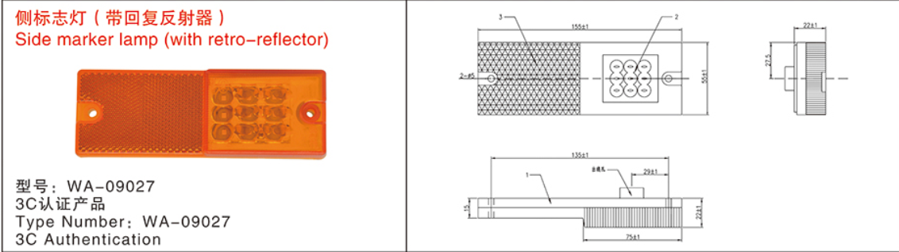
侧标志灯/侧回复反射器
型号: WA-09027编码: JD220102020045适用: 公告车用件
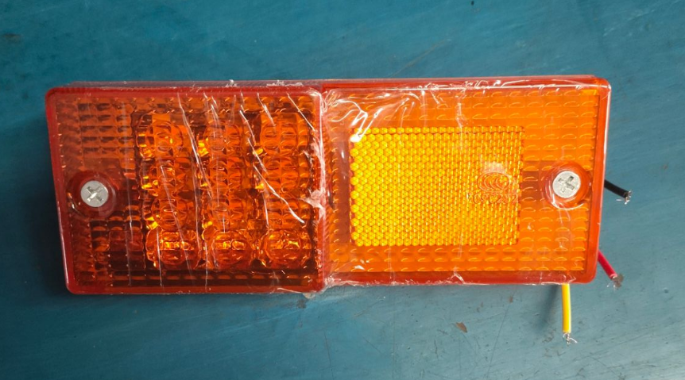
边灯 (153)
型号: 153编码: JD220102020007适用: 挂车通用件
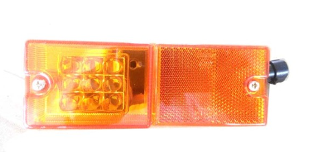
侧标志灯 (LED)
型号: MX-013LED编码: JD220102020011适用: 骨架车
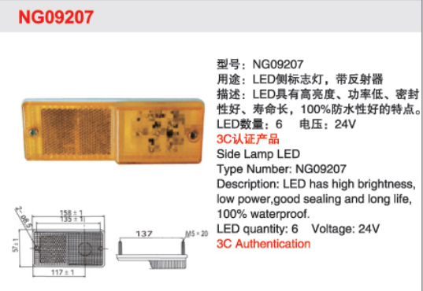
边灯 (NG09027)
型号: NG09027编码: JD220102020016适用: 公告车用件
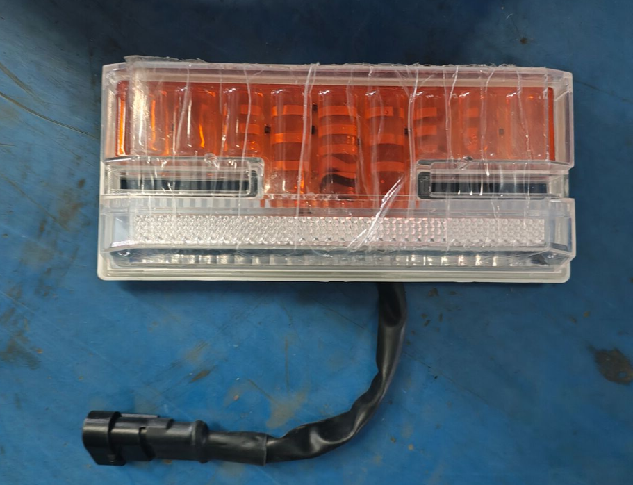
边灯（带照地/转向）
型号: HY-05编码: JD220102020037适用: 钩机板公告车
反射器
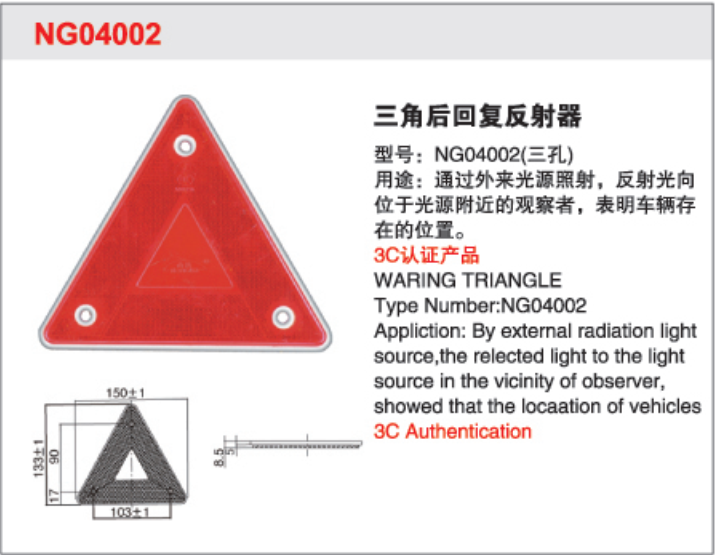
三角形回复反射器
型号: NG04002编码: JD220102020014适用: 公告/检查车
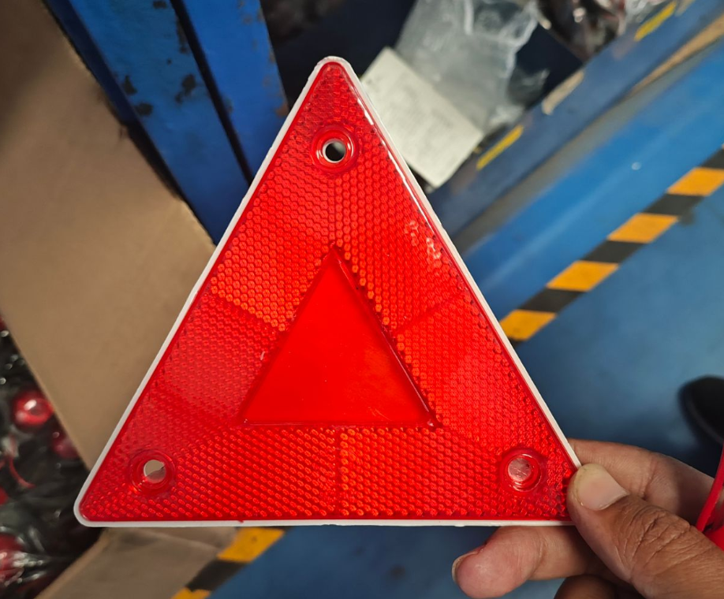
三角反射板
编码: JD220102020013适用: 挂车通用
前位灯
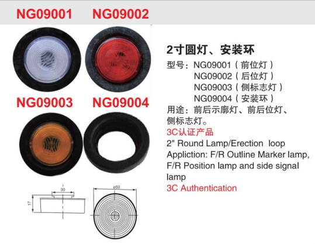
前位灯
型号: NG09001/NG09002编码: JD220102020023适用: 公告车用件
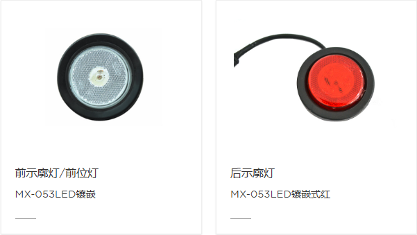
前位灯/前回复反射器
型号: MX-053LEDB编码: JD220102020024适用: 挂车通用
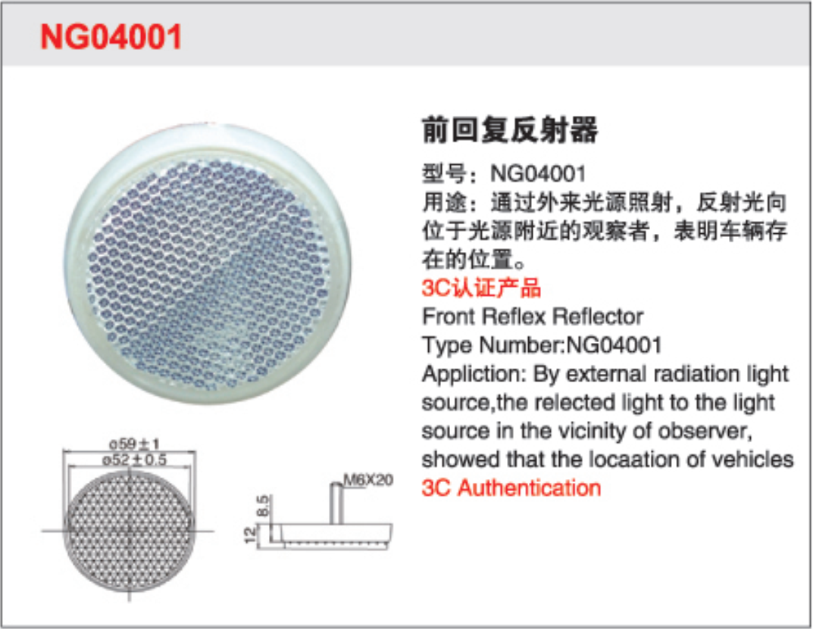
前回复反射器
型号: NG04001编码: JD220102020015适用: 所有车型
牌照灯
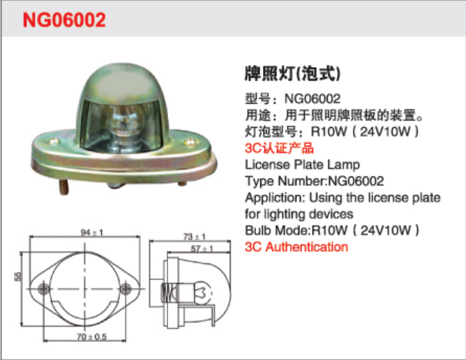
牌照灯
型号: NG06002编码: JD220102020018适用: 公告车用件
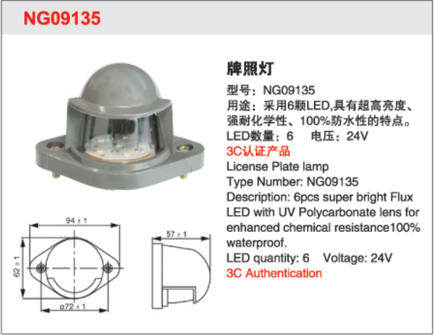
牌照灯（圆）
编码: JD220102020006适用: 挂车通用件
后雾灯
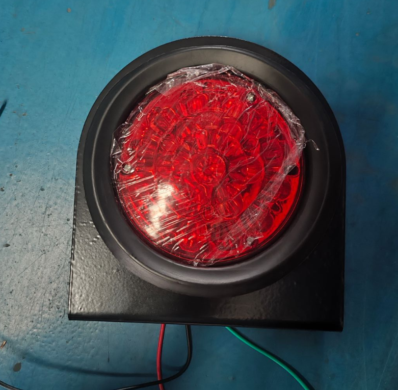
雾灯（LED红）
编码: JD220102020005适用: 挂车通用件
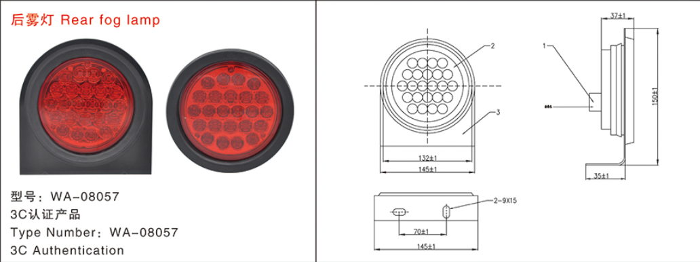
雾灯（4寸圆）
型号: WA-08057编码: JD220102020035适用: 公告车用件
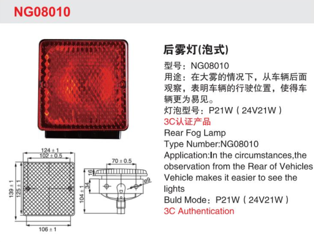
雾灯（方形3C）
型号: 3C-南挂编码: JD220102020017适用: 公告车用件
示廓灯

示廓灯（红）
型号: NG07001R编码: JD220102020019适用: 公告车用件
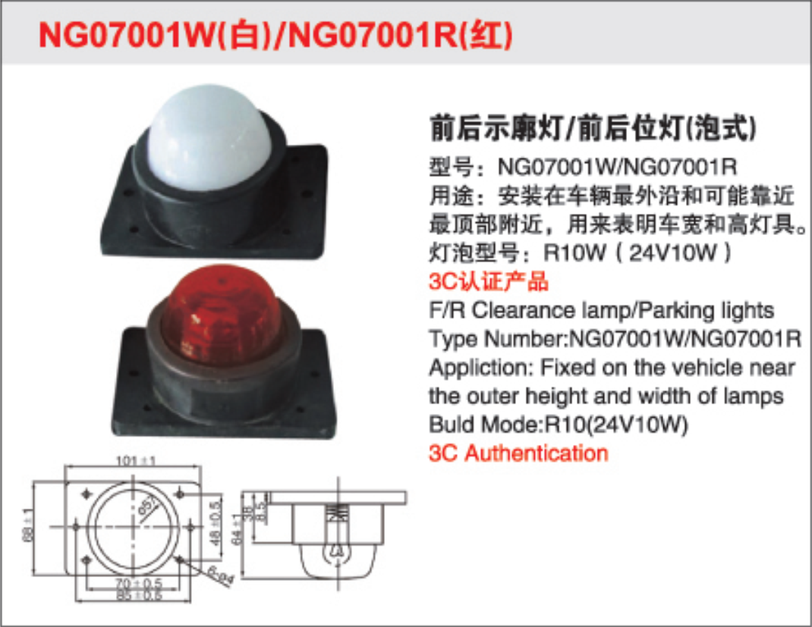
示廓灯（白）
型号: NG07001W编码: JD220102020020适用: 公告车用件
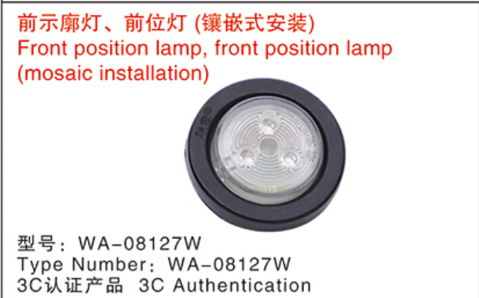
骨架公告前示廓灯
型号: WA-08127W编码: JD220102020050适用: 骨架车公告车
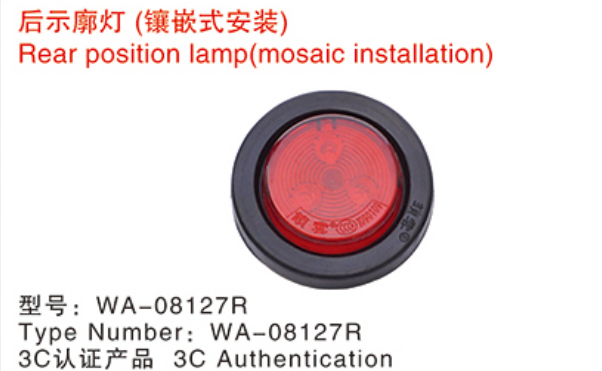
骨架公告后示廓灯
型号: WA-08127R编码: JD220102020051适用: 骨架车公告车
后尾灯
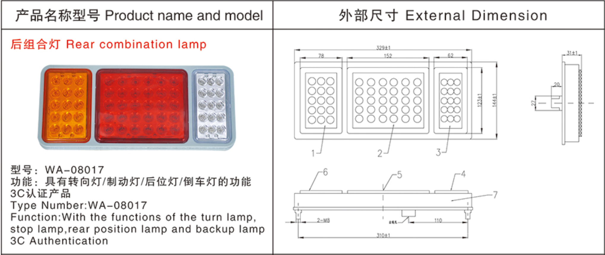
后组合尾灯
型号: WA-08017编码: JD220102020033适用: 钩机板/中置轴
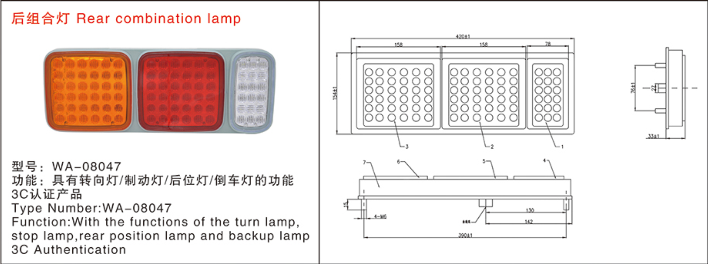
尾灯
型号: WA-08047编码: JD220102020038适用: 常规订单
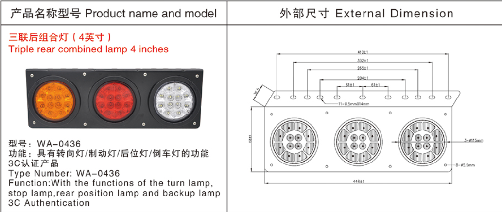
小三联合后组合灯
型号: WA-0436适用: 常规半挂车型
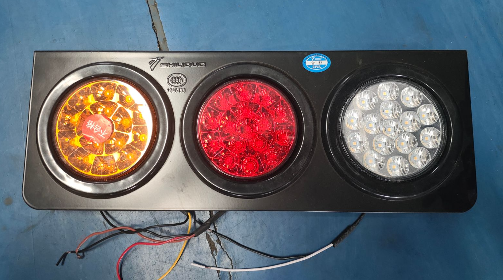
后尾灯（中集型）
编码: JD220102020010适用: 后翻车型